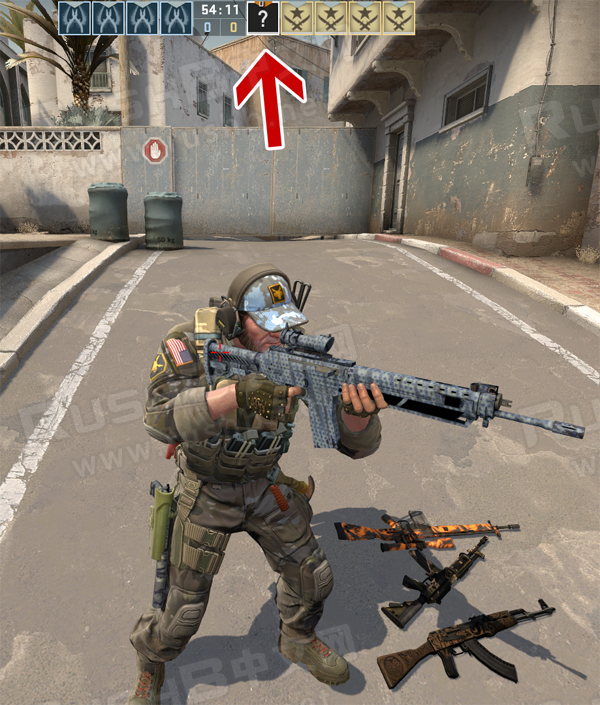
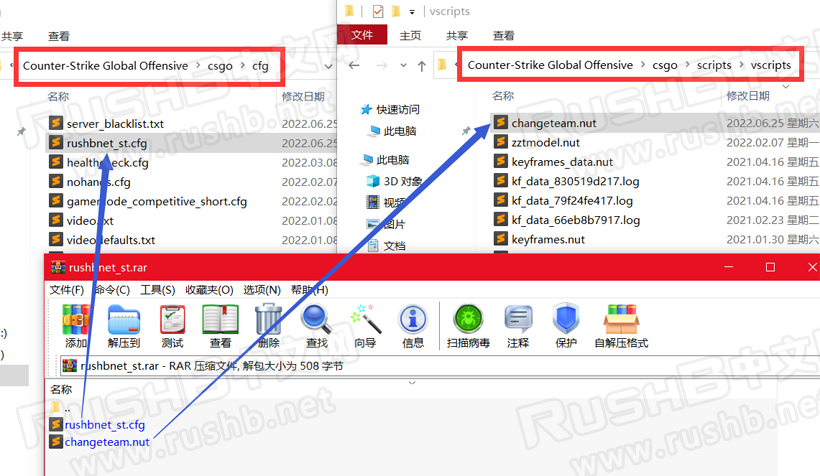
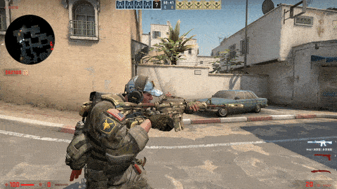

CSGO RushB中文网
CSGO RushB中文网
单机模式下，大家都知道使用GIVE指令获得的对面阵营武器是没有皮肤的，即使自己库存有装备，比如玩家在CT边使用give weapon_ak47得到的是默认皮肤AK。本文将介绍如何单机模式获得对面阵营的皮肤武器。
方法有两种，一种是使用控制台指令，另一种是Script脚本，但原理都是一样，就是把玩家暂时切换到对面阵营，获得皮肤武器后再切换回来。注意只能在开启作弊模式sv_cheats 1下使用，适合单机跑图或创意工坊的玩家。
*同槽位的皮肤只能获取装备的那件，比如装备的M4A1消音皮肤，那么M4A4还是原版。

方法一：指令
单机模式进入地图后，先输入控制台指令：sv_cheats 1
然后，按情况输入以下指令：
切换至CT：ent_fire !self addoutput "teamnumber 2"
切换至T：ent_fire !self addoutput "teamnumber 3"
如果你是CT，则输入：ent_fire !self addoutput "teamnumber 2"
这个时候，你会被切换到T阵营，但不会影响你的血量、装备、外观模型等等，也不会死亡，接着就可以购买或通过GIVE指令获得你要的皮肤武器。
完成后，控制台输入ent_fire !self addoutput "teamnumber 3"，变回CT。
以上方法虽然是指令，但如果你想绑定的话需要两个按键，分别绑定加载包含指令的CFG文件，或者用方法二，虽然准备麻烦些，但只要一个按键即可切换阵营。
方法二：Script脚本
本方法可以自动识别玩家阵营，方便一键切换。首先下载本站提供的CFG及脚本文件：
链接：https://pan.baidu.com/s/1li0rGQwHeHiYPMka4-PZDA?pwd=g2ve
提取码：g2ve
然后将压缩包内的CFG文件和脚本文件放到如图位置：

rushbnet_st.cfg放到Counter-Strike Global Offensive\csgo\cfg文件夹；
changeteam.nut放到Counter-Strike Global Offensive\csgo\scripts\vscripts文件夹。
然后打开CSGO进入地图，然后输入开启作弊模式指令：sv_cheats 1
为了方便使用，我们选一个按键用于绑定切换阵营功能：bind x "exec rushbnet_st"
这里用的X键，你可以换成其他。
准备工作完成，当你是CT时，只要点一下X键就可以切换到T阵营（外观还是CT），然后购买或GIVE获得皮肤武器，最后再按一下X键切换回CT阵营。
